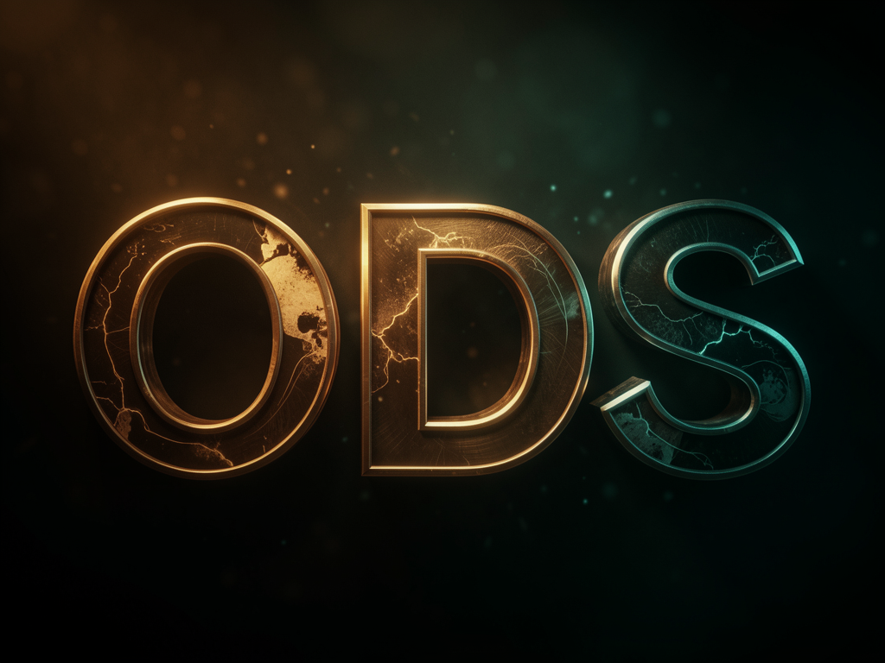

O ODS transforma seu PC, Mac ou Linux num servidor de IA completo: modelos locais, chat, dashboard, voz, agentes, RAG e geração de imagem — sem nuvem, sem assinatura.

Em vez de instalar e amarrar na mão llama-server, Open WebUI, n8n, ComfyUI e ferramentas de privacidade, o ODS instala e conecta tudo de uma vez — e seus prompts e dados ficam na sua máquina.
Instalador único pra Linux, macOS (Apple Silicon) e Windows (WSL2). Detecta sua GPU (NVIDIA/AMD), escolhe o tier de modelos certo e sobe a stack em Docker.
Nada de nuvem obrigatória: inferência, chat, RAG e imagem rodam no seu hardware, com serviços presos em 127.0.0.1. Modo cloud/híbrido (OpenAI, Anthropic) é opcional.
Chat estilo ChatGPT, dashboard de controle, voz, agentes, workflows (n8n), busca privada e geração de imagem — cada um é uma extensão com manifest, ativável pelo dashboard.
O instalador roda 13 fases sequenciais: detecta o hardware, mapeia pro tier de modelos, monta o Docker Compose em camadas (base + overlay de GPU + extensões) e sobe tudo.
O instalador cuida do resto — inclusive Docker, se faltar.
Docker + GPU NVIDIA ou AMD (ou só CPU). O instalador detecta e configura.
# checar GPU nvidia-smi
Apple Silicon (M1+). Roda inferência nativa com Metal.
# instalador é o mesmo curl -fsSL https://install.osmantic.com/ods.sh | bash
Modo cloud: mesma stack completa, com APIs OpenAI/Anthropic/Together no lugar da inferência local.
./install.sh --cloudDo zero ao chat com modelo local — comandos reais do projeto.
Linux e macOS. No Windows, use o instalador PowerShell (install.ps1) ou o quickstart WSL2.
curl -fsSL https://install.osmantic.com/ods.sh | bash # detecta GPU, escolhe modelos e sobe a stack
Terminada a instalação, o Open WebUI (chat estilo ChatGPT) já está no ar.
xdg-open http://localhost:3000 # chat · API llama-server em localhost:11434
O ods-cli controla a stack inteira: status, serviços, modelos e diagnóstico.
ods status # saúde de todos os serviços ods doctor # diagnóstico completo ods restart # reinicia a stack
Modelos, GPU, setup, serviços e extensões (voz, agentes, n8n, ComfyUI, busca privada) num painel só.
# dashboard web da stack xdg-open http://localhost:8090
Tudo configurável por variável de ambiente — veja ods/.env.example pra lista completa.
WEBUI_PORT=9090 ./install.sh # muda a porta do chat ./install.sh --cloud # stack completa com APIs de nuvem
Extensões bundladas, cada uma com manifest próprio — ative o que quiser.